01
空间宣言
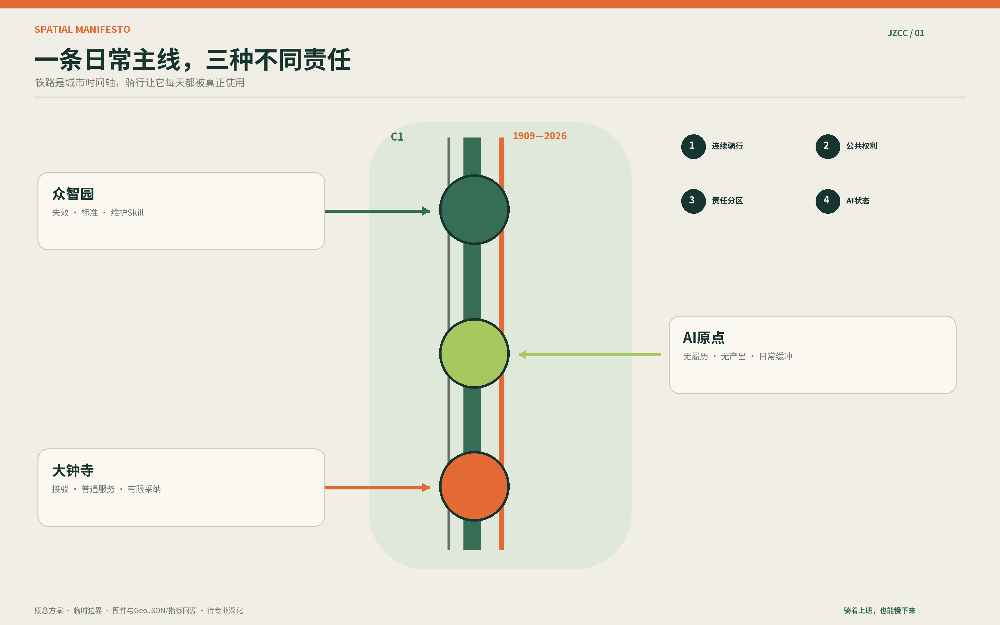
一条骑行优先的公共AI城市采用走廊：日常亲和，测试严谨，退出清楚。

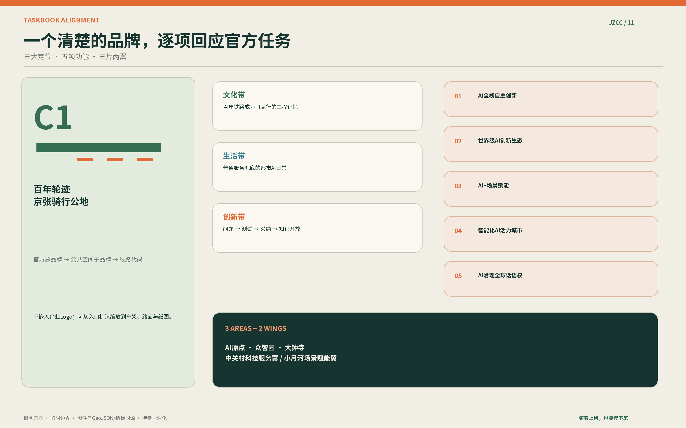
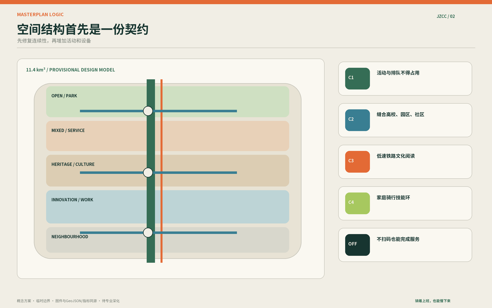
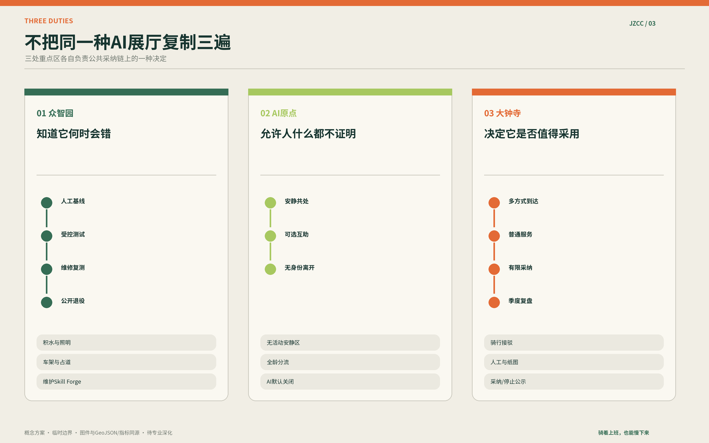
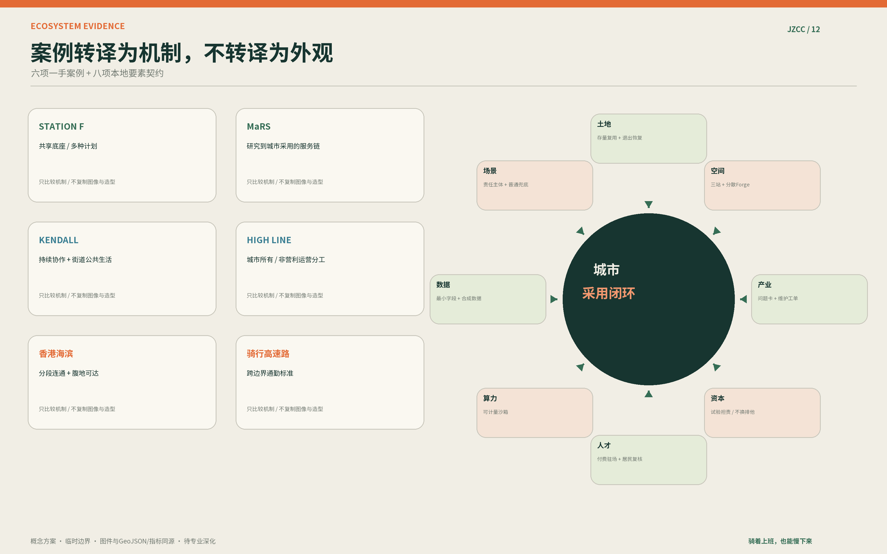

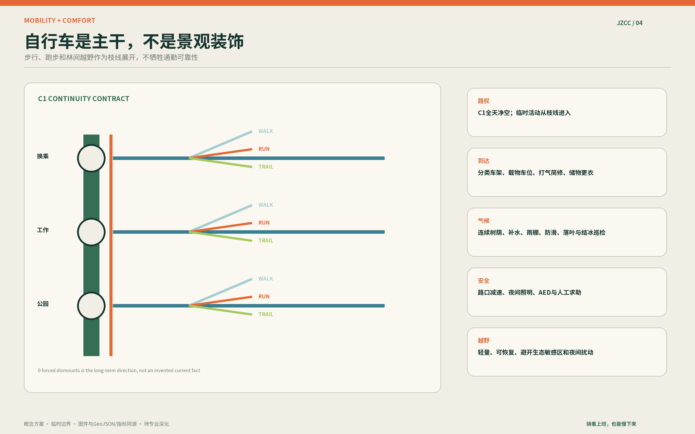
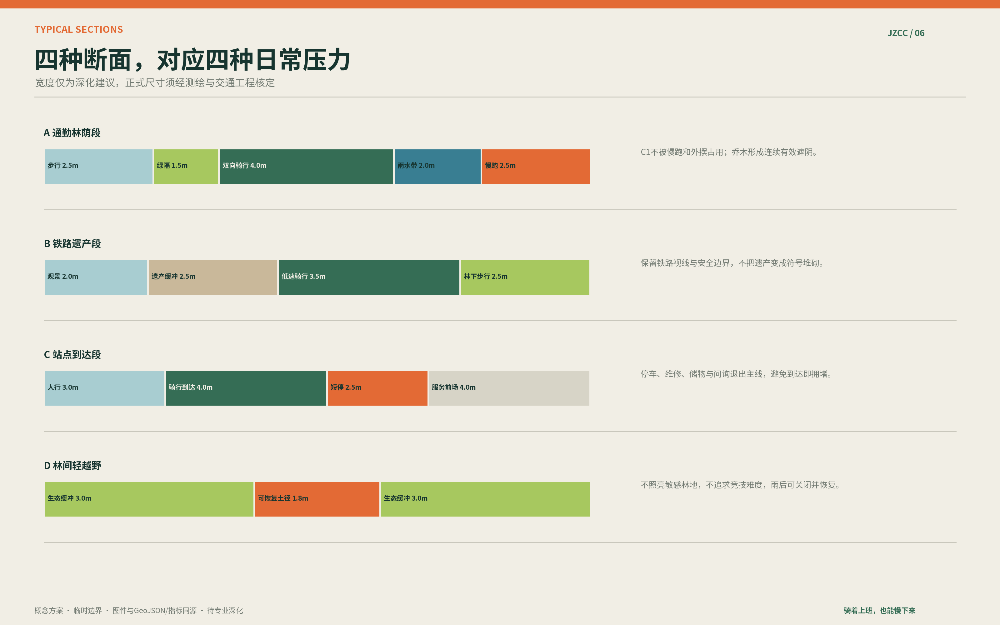
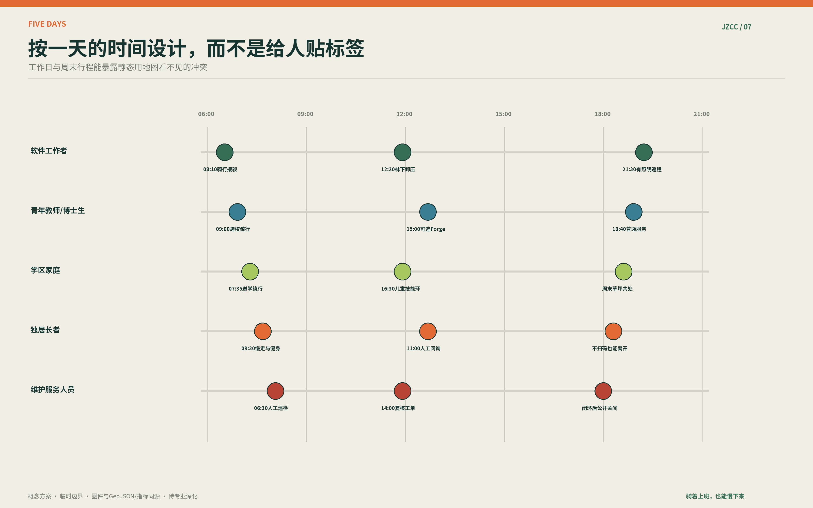
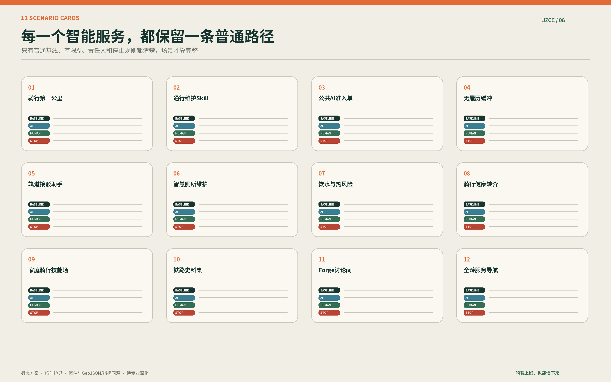
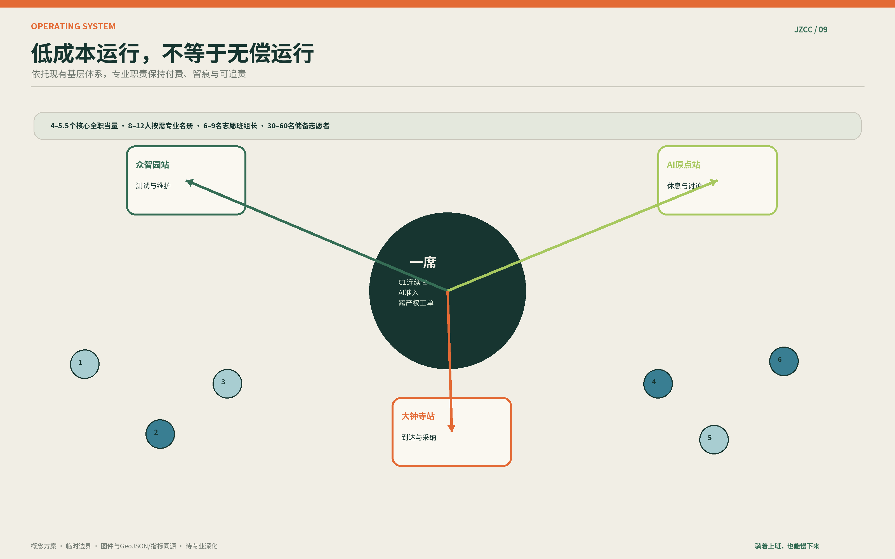
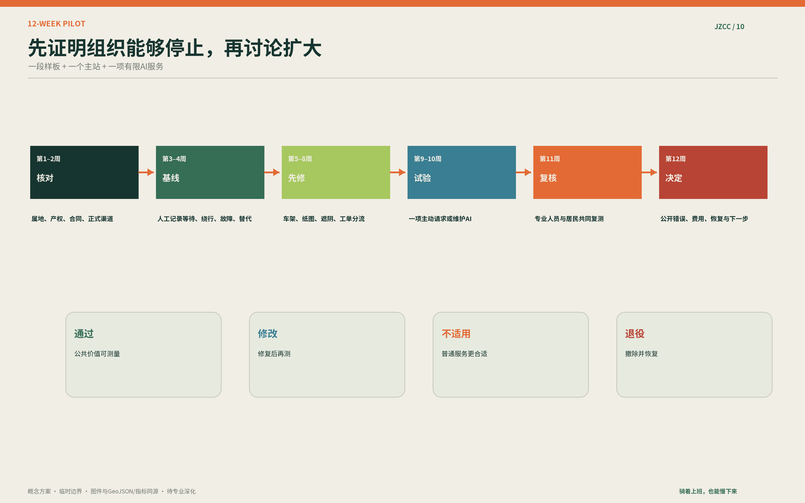
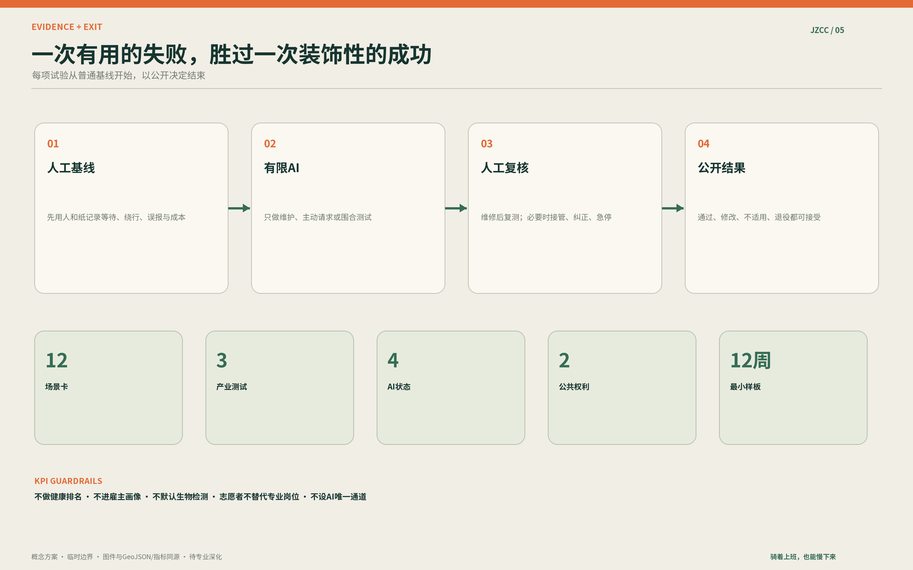
以下只表达气质；空间证据由总图、GeoJSON和指标承担。


临时设计模型
模型绿地率
模型公共空间率
张场景卡
有限样板
总览地图 · 三层范围 · 重点区域 · 用地分区 · 交通慢行 · 蓝绿公共空间 · 建筑 · 更新项目 · AI 场景 · 核心指标 · 任务覆盖 · 自检状态 · 来源 · 假设
范围 · 几何 · 任务对位 · 来源 · 权利 · 假设 · 指标 · 试点 · 人员 · 退出。
详见 visual/assets/formal-scoring-crosswalk.json、sources.json、visual/assets/asset-register.json、compliance_matrix.json 与 self_check.json。